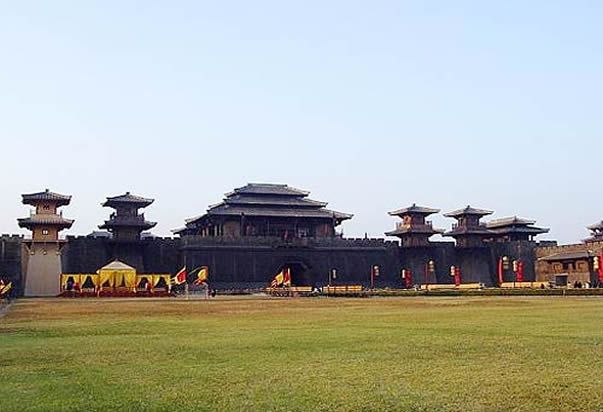

金华神秘村落 藏在江南小镇的故宫

诸葛八卦村
诸葛八卦村位于兰溪城西18公里，古称“高隆”，村中有3000余人是诸葛亮嫡传后裔，为全国最大的诸葛亮后裔集中聚居地。 村落格局按九宫八卦图式而建，整体布局以村中钟池为中心，全村房屋呈放射性排列，向外延伸八条弄堂，将全村分为八块。村内弄堂似通非通，似连非连，曲折玄妙，似乎是重重山峦间埋藏的一个谜语。
双龙洞
双龙洞位于金华北山西北麓，离城约13公里，海拔520米。它的特点是“洞中有洞洞中泉，欲觅泉源卧小船”，千百年来人们誉为“ 水石奇观”。 双龙洞由内洞和外洞组成，外洞面积1200平方米，可容千人。洞中常年温度约在15摄氏度左右。
横店
横店是一个屡屡出现奇迹的地方。30多年前，它只是浙江东阳境内的一个偏僻小镇，今天，它不仅是全球规模最大的影视拍摄基地，而且构筑了一座超大规模的古玩城。
横店现已建成秦王宫、清明上河图、明清宫苑、大智禅寺、明清民居博览城、红军长征博览城等近20个跨越千年时空，汇聚南北地域特色的影视拍摄基地，被美国杂志称为“东方好莱坞”。
在这些著名电影拍摄现场参观旅游，一定要记得控制自己的尖叫，因为你会发现很多电影中的场景原来就在面前，当然，在看之余，还可以上前去亲身体验一下作为剧中人的感觉，或者是公主，或者就是万人之上的皇帝了。
卢宅
有一种说法口气很大，叫做“北有故宫，南有卢宅”。卢宅全宅占地约5公顷，由十余组按南北轴线布置的宅院所组成。它的格局和故宫相仿，叫做“前堂后寝”，前堂是卢家的公共厅堂，供族内子孙举行祭祀、聚会、娱乐、吉庆、议事、教习等，石库门的后面则是家眷、仆人的生活起居空间，平时石门关着，外人不得入内。进入卢宅前，有风纪世家、大方伯、旌表贞节三座牌坊迎接，然后要走过非常宽阔的甬道，才见到卢宅的真面目。整个纵轴线有九进，长度竟然达到320米。在中国，只有故宫和孔庙有这样的结构。卢宅和别的江南建筑不同之处，在于它既有北方的大气布局，又有南方的精雕细刻。
不能错过的金华菜
金华菜是全国8大菜系之一浙菜的重要组成部分。烹调方法以烧、蒸、炖、煨、炸为主。金华菜以火腿菜为核心，颇有名气。仅火腿菜品种就达300多道。
金华的风味小吃以金华夜煲最为著名，其绝佳的风味，别致的情调闻名遐迩。此外还有金华酥饼、金华肉粽、金华汤包、磐安拉面、磐安饺饼筒、金丝蜜枣、杨梅烧酒等。
品尝金华美食的主要去处有：金华夜市大排档（人民广场附近）、百年老店清和园、国贸宾馆、世傅美食厅、兰溪古商城饮食一条街等。
婺剧
婺剧是我国最古老的地方剧种之一，为浙江第二大剧种，它以金华为中心，流传于浙江金华、衢州、丽水和江西等一带。婺剧至今已有400多年历史，剧目丰富，主要声腔为高腔、昆曲、乱弹、徽戏、滩黄、时调6种。婺剧的艺术特色是古朴浑厚，强烈粗犷；唱腔高亢，音乐丰富；擅长武功,特技惊人，具有鲜明的地方特色。
诸葛八卦村内很有特色，那些门庭飞阁重檐，古朴又大方；那些木柱横梁，斑驳得有些性感；那些粉墙黛瓦，让我惊呼这才是最经典的颜色搭配。看惯了城市的房子笨重的直线，这些转折跳跃的笔触，让我感觉眼前一亮。
走在卢宅的街上，没有游客的喧哗，狗儿不时地穿行而过，商贩不紧不慢，做着手中的事情，老人信步悠悠，古街平静、祥和。
航空
金华义乌机场距离金华市区50公里，离义乌市区10公里左右，是浙江中西部地区最大的航空港，有飞往上海、北京、广州、海口、南昌、汕头、武汉、厦门、福州等地的班机。
机场交通
机场到义乌市区新建了机场大巴线路，随航班降落随时发车。如果打的，打到市区30元左右，20分钟可到。
从市区前往机场的班车，在城中中路88号的民航售票处乘坐。
机场往来金华
机场打的到金华市区130元左右，1小时左右可到金华。
从机场坐班车前往金华，要到义乌市区的南方联（南方客运站：位于稠州西路），再坐班车前往。
金华前往义乌，在金华西火车站坐K11公交到汽车东站下。汽车东站转金华至义乌班车，首班车6:00，末班车18:30，间隔6分钟一班，流水发车。也可乘坐火车往来于金华与义乌之间。
铁路
金华铁路枢纽是华东地区重要的交通枢纽，以金华西站为中心，向四境辐射。沪港直通列车和浙赣、金温、金千线上一切列车均停靠金华西站。
金华境内始发的旅客列车有：金华西—沈阳北、金华西—温州（延伸至兰溪站）、金华南—温州、金华西—千岛湖(2009年已经停运)、义乌-千岛湖、义乌-南昌、淮北-义乌-上海、兰溪-上海（2010年已经停运）（2对）。
金华西站是最早的金华火车站，位于城中心婺城区迪耳路，浙赣线上的列车均停靠于此。附近饭店不少，因为基本上属于市中心区域的边缘。
金华南站是位置在城西南，属于郊区，只有金温铁路上去温州的车才会停靠此站。西站到南站打的至少35-40分钟。
金华往来义乌：
从金华西到义乌的列车一整天持续发车，班次非常多，40分钟左右可到义乌。
出租车
金华出租车起步价6元（3公里），5公里内每公里2元，5公里外每公里2.6元。义乌出租车2公里起步费5元，之后每公里1.8元。
金华美食
金华汤包
金华汤包历史悠久，素有“金华第一点”的美誉，也是我国南方小吃汤包中的佼佼者。金华汤包以猪肉皮汁加老母鸡汁制成的皮冻和鲜肉笋丁作馅，并在笼底垫以青松蒸制，故馅特鲜，汁特多，清香宜人，深得广大食客的喜爱。目前在金华市区已难得见金华汤包的身影，但据了解，市区南滨花园一小饭店做的金华汤包倒也挺地道。
特点：造型雅致，皮薄软韧，馅鲜汁多，清香可口，风味独特。应现做现吃，先咬个小洞，吹气降温，带汁慢食。
兰溪鸡子馃
鸡子馃也叫鸡蛋饼，金华各地均有摊店制作出售，而以兰溪鸡子馃最为著名。一只猪油、瘦肉和葱馅的油煎饼中，灌入一只打碎调味的鸡蛋，熟后各馅结成整体，入口醇香鲜美，深受食客们的喜爱。城镇居民则多作夜宵点心食用。听说兰溪老屠鸡子馃店的还比较正宗，地址在兰溪市和平路56号。
特点：形态丰满，色泽金黄，蛋香扑鼻，鲜美可口。
东阳土鸡煲
“东阳土鸡煲”的学名应叫瓦罐土鸡煲，传统做法是取两年以上的土公鸡宰杀煺毛，洗净内脏；五花肉切成方块；再取陶钵一只，放入五花肉、鸡及米酒、姜片等调料，盖好用面团密封；然后将几片碎瓦放在铁锅内，上面放上盛鸡的陶钵，盖上另一只铁锅，用中火炖3小时，吃起来味道鲜美，如今在东阳各大酒店里都有这道菜，价格在48元左右。
东阳沃面
早期在东阳民间，人们习惯把吃剩下的菜、汤用来煮面条，然后加入番薯淀粉制成糊面，易消化吸收，又营养丰富。后慢慢地经过厨师们的精心制作，成为现今的一大特色，独具东阳风味。如今在金华一带，宴请贵客时最后主食常常喜欢点一碗东阳沃面。
特点：热烫，味鲜，色彩丰富
永康肉麦饼
平时家人团聚，逢年过节，此饼是永康人的美味佳肴。在永康小有名气的主要有爱芬一元麦饼店、千里香饼屋。永康小麦饼的主要原料有富强粉、绍兴霉干莱、夹心肉、味精、葱白末、胡椒粉。爱芬一元麦饼店。坐落在永康市区五金西路9号，永康市区坐5、2、6路公交车可到该店。千里香饼屋位于永康市区南苑路37号。店内比较清爽，生意也不错，主要经营肉麦饼、黑米粥。千里香饼屋现在主要卖两种馅的饼，干菜和雪菜的。永康市区坐1、3、7路公交车可到该店。
特点：色泽淡黄、形态饱满、汁多肥嫩、干香宜人。
浦江麦饼
浦江麦饼是浦江特色小吃之一，历史悠久，用料简单，家喻户晓。浦江人经常用麦饼来招待客人，每年的正月十五家家户户都喜欢吃麦饼。浦江街头可买到浦江麦饼。
特点：柔软、清淡，是早上的佳点。
白玉蜗牛
蜗牛以其“四大名菜”之一而享誉海内外，特别是欧洲国家有以蜗牛为美食的悠久历史。我国史料也有蜗牛为肉中佳品的记载。蜗牛，肉质肥嫩，蛋白质含量高，脂肪含量低，含有大量有利于人体的微量元素。
金华煲
“金华煲”系浙江金华市独有的美味砂锅炖品，采用二十余味名贵中药材及香料，精心调制而成。味道独特，滋补养生，价廉物美，吃了不上火，目前在江、浙、沪、湘、粤各省市都开有多家“金华煲庄”并极富盛名，生意红火。